UCCASS is a web-based survey script written in PHP, UCCASS is used to make online surveys, polls, and questionnaires.
Introduction
The Unit Command Climate Assessment and Survey System (UCCASS) (pronounced yoo-kas) is a PHP survey script used to make general purpose surveys or questionnaires. Originally designed for the government, this program is intended to automate the Command Climate Assessment surveys that unit commanders are required to give but it can also be used for general purpose surveys and polls.
Features
The key features of this survey program are:
- Web-based Installation
- Template based presentation using the Smarty Template Engine
- Database abstraction layer using ADOdb, enabling the Survey System to be used with multiple databases (Survey System is only tested with MySQL at this time, though)
- Unlimited surveys, unlimited questions per survey and unlimited answer types. Theme based system allows surveys to have their own look and feel once new themes are made.
- Complete access control system allowing for the creation of multiple administrator users, public or private access to creating surveys, multiple users with individual permissions to take surveys, view results, and edit surveys. Access to surveys and results can be unrestricted (public), or restricted by IP address, cookies, username and password or invitation only (invitation sent by email).
- Access to taking surveys can be restricted to a certain number of times over a given period, i.e. "Allow users to take 1 survey every 7 days.".
- Surveys can be completely hidden and not show up on the main page at all. Access to the surveys is possible by using a unique URL, though, that can be delivered through email, for example. This could allow you to run multiple surveys with multiple users and not advertise what each of them are.
- Individual surveys have username and password protected administration area for activating or deactivating surveys, setting all properties, and editing questions and messages. Multiple users can be created with access to edit surveys.
- Administrative and per-survey level setting allow question, answer values, and user supplied text to be rendered as plain text, limited HTML or full HTML.
- Surveys can be marked as Active or Inactive or given specific start and end dates
- Administrator password allows access to edit all surveys, answer types, and view results of any survey
- Questions can have text or multiple choice answers. Multiple choice answers can be presented horizontally, vertically, in a HTML drop down or a Matrix (grid).
- Questions can be can be marked as required or left optional
- Questions can be optionally hidden or required based upon answers to previous questions (called dependencies) with unlimited dependencies per question
- Survey results are presented in bar graphs showing percentage of answers for each value. Each answer value can be assigned an image to be used for it's bar graph.
- Specific questions can be temporarily hidden from the results page so you only see the questions you want
- Survey results can be filtered based upon the results of any question, i.e. if you have a Gender question, you can filter the results to see just how Females answered your survey to look for trends. Survey results can be viewed in a "table" format which shows each response on it's own table row. Results can also be exported to a CSV file for further processing. Individual text answers that are inappropriate can be deleted from the results.
- Admin controlled "filter limit" to prevent survey results being shown if the results are narrowed down to 3 or less (by default) distinct respondents (this is to maintain anonymity of the users who take your survey, so that the results can not be filtered to such a degree as to identify
- New surveys can be created by copying existing surveys, so there will be no need to rewrite all of the questions and recreate answer types and values. New empty surveys receive a default set of answer types and values.
This program was originally obtained under the Freedom of Information Act and has since been modified from it's original version. The modified version is released under the Affero General Public License and is copyrighted by the author. Version 1.0 and any prior versions are public domain.
Installation
Requirements
- PHP 4.3.4 available from www.php.net
- MySQL 3.23 or higher available from www.mysql.com
- Smarty Template Engine 2.3.0 (included) available from smarty.php.net
- ADOdb Database Abstraction Layer (included) available from php.weblogs.com
Web Based Installation and Upgrade
- Place all files into a directory under your web root.
- If you are installing the database tables into a new database, create the database.
- Only MySQL is supported for the web-based setup. To use any other database system, you will have to create the database and tables manually. The survey.sql file has the table definitions and initial data.
-
Ensure your web server can write to the survey.ini.php file.
- On UNIX style systems, this is normally done by issuing a chmod 777 survey.ini.php command from your Telnet/SSH login. Most FTP programs or Control Panels will allow you to do this, also, but you'll have to determine how.
- 4b. On a Windows system running IIS as the Web Server with anonymous access enabled, IIS will run as the IUSR_<computer_name> user, where <computer_name> is the actual name of the server. Right-click on the survey.ini.php file, choose the Security tab, and give the appropriate user permission to read and write to the file. If you are using NTLM based access, then you'll have to give the individual user or group installing this program access to read and write the file.
- Load http://<server name>/<path to files>/install.php into your web browser. Choose either New Installation or upgrade from a previous version. If you choose a new installation, any existing data in the database you specify will be lost. If you choose to upgrade, your existing database will be modified to include any new column additions and/or data.
- Fill out the remainder of the form according to your settings and save the data. See Site Settings for an explanation of each setting. After saving the data, the survey.ini.php file will be written with the new data and the tables and initial data will be created or updated.
- At this point, it is recommended you remove write permissions for the from the survey.ini.php file so your settings are not overwritten.
- You must move or rename the install.php file so the installation procedure cannot be run again unless you choose to do so. The program will not run if install.php is present.
- If you are using the version of Smarty included with this distribution, ensure the web-server can write to the Smarty/templates_c/ directory.
- Load http://<server name>/<path to files>/index.php into your browser and make your surveys.
Manual Installation
- Place all files into a directory under your web root.
- If you are installing the database tables into a new database, create the database.
- If this is a new installation, the survey.sql file contains the table definitions and initial data. You must import this file into the database you created in Step 2. With MySQL, this is normally done from the command line with a "mysql -uuser -ppassword database_name < survey.sql" command (where user, password, and database_name are the actual values for your server). If you or your host provides a program like PHPMyAdmin, then the file can be imported through there, also.
- If this is an upgrade, it is recommended you use the web-based installation process. If using the manual process, each upgrade file in the /upgrades/ folder must be run to bring your database up to date. upgrade_104_105.php must be run to upgrade from v1.04 to v1.05, for example. You must run all of the files in sequence until you get to the version you are upgrading to.
- Table prefixes are not supported when doing a manual installation unless you physically rename each of the tables to include the prefix and then include that prefix into the survey.ini.php file.
- Edit the fields in the survey.ini.php file to match the setting of your site and server. See Site Settings for an explanation of each setting in the survey.ini.php file.
- You must move or rename the install.php file that is used for web-based installation. The program will not run if install.php is present.
- If you are using the version of Smarty included with this distribution, ensure the web-server can write to the Smarty/templates_c/ directory. See Step 4 of Web Based Installation for instructions.
- Load http://<server name>/<path to files>/index.php into your browser and make your surveys.
Upgrade Instructions
Upgrade from v1.04 to v1.05
To upgrade from v1.04 to v1.05, all files associated with the old version must be deleted. The v1.04 templates and survey.ini.php file are not compatible with with v1.05 because of the extensive changes. All of your existing surveys and results will not be removed if you choose Upgrade during the installation process. Choosing a New Installation will remove any existing data you have if you give the same configuration data. Once the v1.04 files have been removed, copy the v1.05 files in their place and follow the Web Based Installation or Manual Installation instructions.
Upgrade from v1.05 to v1.06
If you are using the default templates with v1.05, you can upgrade by simply copying all of the v1.06 files
and overwriting the v1.05 files. There were no database changes nor configuratin file changes, so the installation
sequence does not need to be ran.
If you are using customized templates and wish to keep them, you need to update four of them to fix bugs. There
are only five files with differences between the two versions, so begin by copying the new v1.06 survey.class.php
file and overwriting the v1.05 version. From the v1.06 files, the following four templates must be copied
and placed in each of your template directories. You will need to go back and customize them again after this is done.
- take_survey_question_MM_V.tpl
- take_survey_question_MM_H.tpl
- take_survey_question_MS_V.tpl
- take_survey_question_MS_H.tpl
These files are located in the templates/Default/ directory of the v1.06 files.
Upgrade from v1.06 to v1.8.0
There were quite a few changes regarding permissions with v1.8.0, so many of the templates for older versions will not work and will have to be updated. To upgrade, copy all of the v1.8.0 files to your directory and run that installation program. Because of the access control changes, after the upgrade, any existing surveys will be marked as public (no access control) and results access will be private (admin only, since that's the only user, now). It's advised that you log in as the default admin user (Login: admin, Password: password) and immediately change the password. You can then go about resetting the access controls for each of existing surveys. No survey data will be lost during the upgrade except for the previous access control settings.
Upgrade from v1.8.0 to v1.8.0
Version 1.8.1 is a minor upgrade that includes support for multiple character sets for foreign languages and also fixes an annoying bug regarding quotes when adding answer values. Before upgrading from a previous version, take notes regarding your settings in the survey.ini.php file because v1.8.1 includes a new version of that file. To upgrade, delete all of the old UCCASS files (except any custom templates you may have created) and copy the new files to your directory. Run the install.php file and re-enter all of your settings that you copied from the old survey.ini.php file. The will see the new option to choose a character set for your installation and the available options. In the drop down at the top of the page, choose whether you are upgrading from a previous version or performing a new installation. Upgrading from any previous version will not remove any existing surveys or results. If you are upgrading from a version prior to v1.8.0, read the notices above for each new version to see what changes will be made. After running the installation program, delete the install.php file and UCCASS will be ready to use.
Using UCCASS
Available Surveys
The first view of the survey system will show you the available public and private surveys and an interface to edit existing surveys. Surveys can be in any number of states. To begin with, surveys must be marked as active or inactive. Only surveys marked as active will be available. Survey creators can also give start and end dates to control when the survey automatically becomes active or inactive.
Once active, surveys can be marked as public or private. Public surveys will be available to anyone visiting the site. To complete a public survey, simply click on the name of the survey listed. Private surveys will require a password, however. There is one password for the survey and anyone entering the correct password will be allowed to take the survey. Enter the password in the text box and click the button to begin taking the survey.
The two final states of a survey deal with the results. Results can also be marked public or private and share the same features as public or private surveys. To view public results, there will be a link you can click on after the name of the survey. To view private results, you must enter the password in the results area text box and click the button.
Once viewing the results, any user will be able to use the results features of filtering questions and the ability to group, hide, or show certain questions according to their likes. This applies to public and private results and is specific to the individual user. In other words, if one user filters a survey to just include Male results, it will not affect how other users have chosen to view the results.
Creating A New Survey
To create a new survey you will need to have a unique, descriptive name for the survey and a password. You are encouraged to use a very descriptive name so people who are looking for your survey will be able to find it easily and so it will not be confused with other surveys. The password is required in case you need to edit your survey at a later date. This password is different from the passwords required to take the survey or view the survey results, if you decide to make the survey or results private.
The first step to creating a new survey will be different depending upon the template your site is running. The default template includes a link on the main page to allow any user to create a new survey. Some administrators may choose to remove and disable this link so that only specific people can create a new survey. If you do not see a link or button regarding creating a new survey on the main page of the survey site, then ask the site administrator for instructions.
Once you have access to the wizard to create a new survey, you will need to provide the survey name and password mentioned earlier in the text boxes. The third optional part to creating a survey is choosing whether you want to copy an existing survey or not. You can choose to begin with a blank survey and define all questions, answers, and dependencies yourself or you can copy a survey already made. If you choose to copy a survey, all questions, answer types and values, and dependencies of the survey will be recreated for the new survey, however, the results will NOT be copied to your survey. Your survey will begin with zero results.
Once you have supplied the requested data, click on the link or button for the next step. At this point the survey is created with either default or copied data. The procedure of creating a new survey from this point on is the same as editing an existing survey as described in Editing Surveys. You can adjust the survey properties, add or edit questions and dependencies and also create new or edit existing answer types and values.
Editing Surveys
Surveys have four main sections when they are being edited. The first section deals with the survey properties. Here you can edit the welcome and thank you text, activate your survey, and adjust any passwords. The second section deals with questions, both adding new questions and editing existing questions. This area is also where you'll define dependencies among the questions.
The third section deals with editing answer types and values. Within the survey system, you define a specific answer type of a text box, multiple choice, etc, and give the answer values if appropriate. Then, when adding or editing questions, you'll choose from the defined answer values for each question. Normally an answer type is used for multiple questions, so it's easier to create these separately.
The fourth section of editing surveys, access control, will control who has access to the surveys and how they get access.
The links along the top of the page control access to each of the different sections of editing a survey.
Survey Properties
The properties of your survey control what users see when the first start taking your survey and when they complete it. They also control access to your survey and provide some administrative functions for clearing or deleting your survey. After you have made any changes to the survey properties, don't forget to click the save changes button at the bottom of the page before moving into any other sections.
Survey Name and Creation Date
The survey name was already given when you created the survey, but this will allow you to edit the name is necessary. Remember that if you change the name too drastically, users may not be able to find the survey. The creation date lists the date this survey was initially created. This field is not editable and just serves are a reminder or notice of how old the survey is.
Active and Inactive Status
You can use these properties to manually turn your survey on or off. Making the survey active will cause it to appear in the public or private available survey list. The survey must have at least one question in order to be activated. If the survey has been given a start date then the survey will not actually become active until that date arrives. If you have specified a start date yet want the survey to be active immediately, you must remove the start date from the previous property. Making a survey inactive will disable anyone from completing the survey. The results of the survey are only available if the survey is active. Making a survey inactive will not remove any results, however.
Start and End Date
After you are through creating your survey, you can use the start and end date area to specify when the survey should become active and inactive. At midnight on the start date, the survey will appear in the public or private area depending upon the survey properties. It will be marked as inactive at 23:59 on the end date that you specify. Dates must be given in a YYYY-MM-DD format, such as 2004-01-20 for January 20th, 2004. Also note that the start and end dates you give will override the active or inactive status.
Survey Template
Each survey can be assigned a template to control the looks and layout. While the main site and available survey list can be assigned one template, the system you designate here will be used for people taking the survey and viewing the results. You may wish to create different templates to go along with the questions and audience of your surveys or use the same template for all surveys on your site.
Survey and User Text Modes
These settings control the rendering of text supplied for the survey properties, questions, answer values, and user supplied text. The Survey Text Mode setting applies to any text used to create the survey, such as name, questions, and answer values. User Text Mode applied to any text supplied by users as they answer the surveys. If you do not have any text answers in your survey, then the User Text Mode will not affect anything. There are three options for each mode, although an administrator might have restricted the use of the HTML settings.
- Text Only: Any text provided will be shown exactly as it's typed. Any HTML code that's included will be shown as plain text and not be rendered within the browser. This is the recommended setting for User Text Mode for security reasons.
- Limited HTML: This mode will allow the use of b, i, u, div, span, a, and img HTML tags with restrictions on what attributes can be used with each tag. The restriction on attributes is enforced so that onchange, onmouseover, etc JavaScript code cannot be injected into these limited HTML tags. This is the recommended setting for Survey Text Mode so that you can use additional formatting within your questions and answer values.
- Full HTML: Warning: Full HTML is a security risk unless used in a controlled environment. The Full HTML setting will render any and all HTML, JavaScript, DHTML, etc that's supplied in the text. In a controlled environment, this may be useful for including tables, code examples, etc within your surveys, but it can be abused. Injected JavaScript could be used to steal cookies, redirect users, and change any page content. This setting should never be used for the User Text Mode.
These settings can be changed back and forth after the survey has been created. If you use Limited HTML and create a question that includes images, for example, then switch to Text Only, the actual HTML code will be displayed within the question and not rendered in the browser. The user will see <b>bold text</b> instead of bold text.
With the Limited HTML and Full HTML options, you have two placeholders that you can use in your questions and/or answers. The first is {$html} will will resolve to the HTTP address of your current installation such as http://www.bigredspark.com/survey. {$images_html} will resolve to the images folder of the current template such as http://www.bigredspark.com/survey/templates/Default/images. So if you wanted to make a link to another survey within a question, you could use <a href="{$html}/survey.php?sid=55">Click Here</a>. If you wanted to include images in your questions or answer values, you can place them in the images/ folder of your template and refer to them as <img src="{$images_html}/aquabar.gif">. If you change templates, you do not have to change these placeholders so long as the images are also available in the new template. Users can also use these placeholder in their answers but it's up to you to inform them (or rather not inform them) of their ability to use them.
Completion Redirect Page
This setting allows you to set an action to take when the user has completed the survey. There are three options:
- Main Survey Page: This will redirect the user back to the index.php (available surveys list) upon completing the survey.
- Survey Results Page: This will redirect the user to the results page when they complete the survey. This setting should only be used if the results are public, otherwise the user will get a notice that the results require a password.
- Custom URL: You can also provide a complete URL including http:// or https:// to redirect the user to upon completion. This can be used to redirect the user to your own custom thank you page or back to the main page for your own site (instead of the survey system main page).
Results Date Format
This is a date format string used to format the dates in the Table and CSV results views. This date format must match the specifications given for the PHP date() function. Default value is Y-m-d H:i:s but can be changed in the survey.ini.php file or during the installation process.
Time Limit
This is an optional time limit in minutes that can be imposed on your survey. The user taking your survey is informed of the time limit and the approximate time elapsed on each page of the survey. If the user exceeds the time limit, the last page entered is not saved into the database. Because there is no automatic submission of the survey when the time limit is exceeded the system simply rejects the last page even though some of the questions may have been answered within the time limit. For this reason, it's recommended you use as many pages as possible when using a survey with a time limit to prevent valid answers from being rejected.
Clear Survey
This option is used to clear all of the results to your survey. This does not change any questions or answer types or values of the survey, it simply clears the existing results. After developing and testing your survey, this option is useful to clear out all of the test results to prepare the survey to go live
Delete Survey
This is used to delete your survey and all results. If you click the checkbox and save the properties, your survey will be permanently deleted. There is no way to retrieve your survey once it's been deleted. Just checking the box will not delete your survey; you must press the save button at the bottom of the page.
Survey Questions
This section allows you to add new or edit existing questions within your survey. You will also assign answer types to questions and control dependencies and question layout here. If you are creating a new survey and choose to start with a blank survey, you will not see any questions listed. If you chose to copy another survey that had questions already made or are editing an existing survey, you should see a list of questions.
The Question List
The question list shows all of the questions in the survey in the order that the users will see them. This section allows you to jump to an edit page for individual questions, delete questions, and move questions up or down. Page breaks are also listed, but they are not assigned a question number. Any questions that have an N type answer will be given an L1, L2, etc question number. These questions are not actually assigned numbers when taking the survey, but giving them an Lx label allows you to insert questions following these.
The first column gives the question or label number followed by the actual text of the question in the next column. If the question has any dependencies, you'll see them listed under the question text. For example, if a question about fishing is given a dependency of being hidden to females answering the survey, you'll see a dependency such as "Hide if question X is Female".
The buttons to the right of each question text allow you to edit the question, delete the question, or move it up and down. If you choose to edit the question, you'll be taken to another page where you can adjust all of the question properties. If you delete the question, it cannot be retrieved. The results to that question are also deleted along with the text. You can move a question up or down in the list by simply clicking on the appropriate arrow button.
For any page breaks shown in the question list, you only have the option of deleting it. If you wish to move a page break up or down, simply move the questions surrounding the page break in the appropriate direction.
Adding A New Question
At the bottom of the question list is a form that allows you to add new questions and page breaks to the survey. It is here that you give the text of the question, choose the answer type, dependencies, and where the question appears in the survey.
The large text area is where you give the text of your question. What you write here depends on the kind of survey you are creating, but you should be descriptive with your question and always check for spelling and grammar mistakes. Then, based upon the type of question you're adding, you can set the other properties of the question.
Each question must be assigned a specific answer type. Answer types are created separately from the questions as there may be multiple questions that will use the same answer type. This way you only have to create the answer type once and use it for all of the questions.
The list of answer blocks can be shown multiple times. Most questions will only require the answer block to be shown once. The only useful time I've used more than once answer block is for showing three text boxes along with a question such as "List three things that could be improved". Most multiple choice questions will not need more than one answer block but the option is there depending upon the type of survey you are creating.
When creating a new question you also specify how many answers should be required from the user. This number is related to the number of answer blocks you chose to show and the type of question. If you chose to display three answer blocks, say text boxes for example, but only wanted to require the user give an answer in at least two of them, then you'd require two answers. If you choose to require zero answers, then the user does not have to answer the question at all. This applies to multiple choice and text answers.
For a normal multiple choice question you would display one answer block and require one answer if you want the user to be required to answer this question or leave the number required at zero to leave the question optional. For multiple choice questions that allow more than one answer, like a "choose 3 of the next 5 products" type question, if you want to ensure the user checks at least three of the boxes, then you would need to require 3 answers.
You can add a new question anywhere in the survey by choosing what question to add it after or by choosing to make the question the first one. Adding questions in the middle of a survey will not break any dependencies. For instance, you may have a survey where question 3 is dependent upon an answer from question 2. If you choose to add a new question after question 1, thus making a new question number 2, the dependencies will adjust themselves. Now question 4 will be dependent upon question 3 and your new question will be number 2.
One of the final question properties you can choose is the orientation. This only applies to multiple choice questions and controls how the radio or checkboxes are displayed. The options are vertical, horizontal, drop down, or matrix. Vertical answer values will be shown with the radio or checkbox followed by the value, each on their own line. Horizontal answer values are shown with the radio or checkbox first followed by the answer value, all on the same line. Depending upon the number of answer values and the users screen resolution the answers may wrap to a new line. Drop down questions are shown in an HTML drop down box with a blank answer as the first choice. The following image shows an example for each type of orientation with the same answer values for each question..

Questions 4 - 6 were given a matrix orientation. To create a matrix, the list of question, four through six in this case, must all have the same answer type and be assigned a matrix orientation. The survey program will automatically group those questions into a matrix. If you were to insert a new question into the middle, say after question number 5, which had a different answer type, then this would ruin the matrix as it's shown. You may wish to have a question with an answer type of None before the matrix that can be used to describe the questions and answers within the matrix.
You can also choose to add up to three dependencies to the new question, unless you are adding the first question of the survey. More dependencies can be added later by editing the question. Dependencies are explained in the next section.
Lookbacks
When writing the text for your question, you can include previous answers that your users have chosen by using lookbacks. Lookbacks are a special tag that you can place in your question to refer to an answer a user gave. Lookbacks only work for questions that are on a previous page as they require the user to choose an answer before the question with the lookback is displayed.
By default, lookbacks have the format of {$lookback.123} where "123" refers to the question ID or "qid" whose selected answer will be displayed. For example, if Question 1 (which as a quid of 4534) has a user choose a favorite hobby from Reading, Writing or Arithmetic, you can use a lookback in any question on a following page. Writing a question such as "Why did you choose {$lookback.4534}?" will substitute the actual answer chosen by the user for the lookback tag. If the qid does not match a valid question from the survey or is a question that hasn't been answered yet, then no replacement will take place.
You can also have multiple lookbacks per question, such as "Why did you choose {$lookback.1234} for question 9 and {$lookback.1456} for question 12?"
Lookbacks can be used on questions that have any answer type, although using a lookback for a large text area may not be a wise idea. If the lookback refers to a question where the user types in an answer, the text will be encoded at the User Text Mode that's set in the survey properties. This means that you can have your Survey Text Mode set to Limited HTML and include markup in your question, but if you're User Text Mode is set to Text Only, then including a lookback with user supplied text will not result in any user supplied HTML being injected into your question.
The syntax for lookbacks can be changed by editing the constants in the main.class.php file.
Dependencies
Dependencies allow you to add conditions to your questions. You can choose to optionally hide, require or show certain questions based upon the answer to previous questions. By adding multiple dependencies to your questions, you can create complex branching logic so that users may see different surveys based upon their answers. This is useful, for example, when you need to show one set of questions to a certain group of employees and another set of questions to another group. This is possible by controlling the dependencies on each question as you add it.
When adding a new question, you have the option of adding up to three dependencies so long as you are not adding the first question in the survey. This is because the first question has no previous questions to base dependencies on. You can add additional dependencies by editing the question after it's been added to the survey. Dependencies can be deleted by editing the question, also.
To create a dependency, you must first choose whether you want to hide or require the question based upon the answer to a previous question. If you're thinking you need to show a question or not require a question based upon previous answers, that's still possible. The dependencies to show a question are just the opposite of what they are to hide it, so that's why only two options are required. For instance, if you want to only show question 2 if question 1 is answered yet, then your dependency will be to hide question 2 if question one is answered with anything but yes. This works the same way for required versus not required, too. If you want to not require question 2 if question 1 is answered yes, then you choose to require question 2 if question 1 is answered anything but yes.
The actual show dependency is only useful for Multiple Choice - Multiple Answer (MM) answer types and when used in conjunction with the hide dependency. When a user can choose multiple answers and you want to base dependencies on their answers, you must choose to hide based upon certain answers and then show based upon the remaining. Simply choosing hide for MM type questions will not work unless the user chooses each and every one of the hide options.
After deciding if you want to hide or require the question, you next need to choose what question number to base this dependency on. Remember that you can only choose questions that are going to appear before the question you are adding or editing. Once you choose a question number, the possible answers for that question will be shown. Here you can choose which answer values you want to hide or require the question for. On Widows, hold down the Control key while choosing answer values to select multiple values.
Any question, except for the very first one, can have any amount of dependencies. However, you can only base those dependencies upon questions that have a multiple choice answer. You cannot choose to hide or require question 2, for example, based upon what the user enters in a text box for question 1. In fact, questions that do not have a multiple choice answer will not even show up in the list of available question numbers.
Dependencies can be deleted by editing the question. From the edit question interface, you can delete individual dependencies or add new ones. If a question requires more than three dependencies, the additional dependencies will need to be added from the edit question interface one at a time.
Dependencies could also affect the number of pages users actually see in your survey. For instance, if question two is on a page by itself and because of a dependency on question 1 it's supposed to be hidden, the user will go directly from the page one to page 3. You may want to explain this to users or just remove the page count entirely from your template.
Adding A Page Break
Page breaks are useful to break up long surveys into manageable parts. To create a page break in your survey, you must enter a certain text in the new question text area. This text should be listed above or around the add new question area. With the default template, this text is provided as a link that'll enter it in the text area for you. When creating a page break, the only question property that applies is the question number that you decide to insert it after. The answer type, orientation, and dependencies do not apply to page breaks. Page breaks can not be added at the end of the survey. You must choose a question to insert the page break after by using the Insert After Number drop down.
Page breaks may be added automatically by the survey program, also, based upon dependencies. If question 2 has a dependency based upon question 1, there must be a page break between the two. This is because we must first get the answer for question 1 from the user before the dependency can be evaluated for question 2.
The number of pages shown in the question list may not be the actual number of pages the user sees when the begin taking the survey if dependencies are used. For instance, if question 2 is on page 2 all by itself and it's dependency says to hide it based upon a certain answer to question 1, then users may go directly to the third page. They will skip over question 2 and page 2 entirely if the dependency to hide question 2 is matched. So while the survey template may say "Page 1 of 72", the users may not see every page.
Editing A Question
Clicking on the edit button in the question list will allow you to edit individual questions. You will be able to edit the text of the question, change the answer type, and all of the other question properties. This process is similar to adding a new question as you're just changing the question properties that you've already set. Note that you cannot edit a question into a page break. You must use the add new question form to create a page break.
Under the question properties, you may see a list of current dependencies for the question and an area to add new dependencies. The list of current dependencies has a checkbox next to each one allowing you to remove individual dependencies. If you wish to edit or change a dependency, you must delete the old one and add a new dependency. If you are editing the first question in the survey, there will not be an area to add dependencies. This is because all dependencies must be based upon previous questions and in this case there are none.
Adding dependencies to an existing question works the same as when you initially added a question. You can choose to hide or require the question based upon answers to any previous multiple choice question. Only questions that are before the question you're editing will be listed in the dependency list.
Answer Types and Values
Answer types and values are created separately from the actual questions. You may have 100 questions in your survey, but only use a set of five to ten answer types. Creating them separately allows you to use one specific answer type for multiple questions. The answer types you create are specific to your survey, also. Answer types created in other surveys will not be available unless you chose to copy an existing survey. This allows you to customize similar answer types and values for the specific survey that's being created or edited. New surveys that are created blank and not copied from an existing survey will be given a default set of answer types and values that will fulfill most needs. You can always add or delete from them as you create your survey.
Adding A New Answer Type
The first thing you'll need when adding a new answer type is a unique name. The name can not match the name of any other answer type that already exists in your survey. This name is the value you'll see in the drop down when adding or editing questions. You should use something describes what type of answer it is. For instance, in a multiple choice answer that has values of Yes, No, and Maybe, you could name the answer as "M - Yes / No / Maybe".
Each answer value can also be assigned a label that'll be used when users take the survey. This label will appear below the question and before the possible answer values (labels are not shown for matrix questions). You can use the label to further explain the answer values. For instance, if you have a multiple choice question that provides five values and you want the users to choose 3 of them, you may want a label such as "Choose 3 of 5 answers" or "Check all that apply".
There are five main answer types that you can choose from. The first is a "T" answer which means the user will be given a large text area to type in a text answer. This type of answer allows the user to type in a lot of text for the answer and should be used if you expect a long answer to the question.
The second answer type is an "S" answer which will show the user a one line text box to type a text answer into. This answer type is limited to a length of 255 characters and should be used for single word answers or small sentences.
The next two answer types allow multiple choice answers. The "MS" type is for multiple choices where you only want the user to select one of the possible values. This answer type will use radio buttons. The "MM" type is for multiple choices where you want to allow the user to select more than answer value. This answer type will use checkboxes.
The final answer type is "N" which stands for none. This means the question will not have any answer values to choose from. This type of answer value is useful to assign to questions that'll act more as labels. For instance, you may want to create a question with an answer type of "N" before a large matrix to explain all of the possible ways to answer. This can also be used to set up a sequence of questions such as "For the following 20 questions, choose 1 through 5 where 1 is LOW and 5 is HIGH". Questions that are assigned an answer with a type of "N" will not be assigned a question number since they won't actually have any answers.
Since answer types of T, S, and N all are presented the same to the user taking the survey, there's really no reason to have more than one of each in any given survey. You would typically create one answer type of "S", name it "Sentence", and then use this answer type for any question that requires a short text answer.
If you chose to create a multiple choice answer type, the final step is to list the different choices. You can have up to 99 different values for a multiple choice answer type. While 99 text boxes are not shown by default, it's possible to add more text boxes so that you have as many as you require. Each answer value (or choice) should be clear to the user so they know exactly how they are answering. For instance, don't use answer values of 1 - 5 without first explaining what the values mean. The answer values will be presented to the user in the same order that they are entered here.
Each answer value can also be assigned an optional numeric value along with a displayed text value. This numeric value is only used when exporting the results to a CSV file. When exporting, you have the option to show answers with the displayed text or with the numeric value. Exporting with the numeric value may be useful if you need to analize the results in another program. If you do not plan on doing this, then the numeric values may be left blank or set to zero. (Note: In versions prior to 1.8.0, this field was known as "Group" and had a different function. Groups were removed in 1.8.0 and replaced with the ability to include this numeric value.)
Each answer value can be assigned an image to be used when creating the bar graph for the results. The bar graph is simply made by stretching the image to certain lengths based upon the percentage of answers. This means you can use a single pixel image as your bar graph image and it'll be stretched to different lengths for each answer value. You can use the same image for all possible values or make them different. Using different images can be useful when you want to "highlight" certain answer values. For instance, if you have a yes or no question where someone answering no may be a serious incident, then you can highlight the "no" value with a red image while keeping other values another color.
A feature built into the survey system allows you to use beginning and ending images that'll be put on either side of the stretched image. Since the stretched image will look like a plain rectangle, these beginning and end images are often used to round off either end of the image and make it more visually appealing. If you choose to use anything.gif as your image, for example, the system will also look for a anything_left.gif and/or a anything_right.gif image file to be placed upon each side of the stretched anything.gif image. If those files do not exist, either one or both of them, then only the anything.gif file will be used and stretched to show the bar graph.
There is no way to define a default answer value when creating an answer type. This means that as users take the surveys and are presented questions with a multiple choice answer type, there will be no default answer value selected. This is to prevent users from just accepting the default answers and not taking the time to select an answer that applies. This also means that if the question is not marked as required, it is possible for the user to not answer the question at all.
Editing An Answer Type and Values
Editing answer types and values presents the same interface as adding answers, yet you're allowed to edit the name and possible values along with delete the answer type entirely. After choosing the answer type that you want to edit, you'll be shown the current values.
If the answer type you chose to edit is already being used in the survey, you should be cautious when editing it. You will not be able to delete an answer type if it's being used in a survey, either. If you adjust the actual answer values of a multiple choice question when it's already being used in a survey, you may ruin the results you've already obtained.
The edit answer value interface will show you the current values of the name and label and allow you to edit them whether the question is being used or not. If you have a multiple choice question, the answer values are also shown along with the numeric value and image choices. You can also add more answer values if necessary.
While you're allowed to change the type of the answer from the T, S, MS, MM, and N types, you may end up losing results to the survey if you switch from a multiple choice type answer to a text answer and vise versa. It's advised that you only switch between the MM and MS types unless you do not need to be concerned about losing results.
Access Control
Access Control is a new feature added in v1.8.0 that allows you to control administrative users, who can create surveys, take surveys, view results, and edit surveys by a variety of means.
Access Control Types
There are five different types of access controls you can use for surveys. Access to the admin section, creating surveys (if private) and editing surveys is always with a username and password. Taking surveys or viewing results can be public, restricted by IP address, cookie, username and password or invitation code. Access Types:
- None - Public Survey: Anyone with that can access the survey program can take a survey or view the results of a survey with this level of access control.
- Cookies: Access to surveys is tracked with cookies. Each time a user takes a survey, a flag is stored in a cookie. This cookie is checked each time the user takes the survey to see if they are allowed to take the survey based upon the other access control settings. Note: Cookies are stored on the user's computer and the values can be changed. Cookie access control is easy to bypass and cookies can be turned off entirely (bypassing this whole control). Some organizations have privacy policies that do not permit persistant cookies (which this control users) to be set at all. This is not a secure method of controlling access and should only be used in a controlled environment.
- IP Address: Access to surveys is tracked by the users IP address. Each time a user completes a survey, their IP address is stored. For each following request to take a survey, the IP address table is checked and it's ensured that the given IP address still has permission to take the survey. Even though IP addresses are stored, there is no way to relate a user's IP address to individual answers given in a survey. Note: IP Addresses are not a secure or recommended way of controlling access to surveys unless used in a controlled environment. Some firewalls and proxy servers will change or hide the IP address of the user, so this control can be bypassed. Many users on large ISPs can be represented by the same IP address, so if one person takes the survey, it will lock everyone else out. IP addresses can be spoofed, also, so users could change their IP address and bypass this control.
- Username and Password: Access to surveys is restricted by the usernames and passwords you define in the User List. This is the most secure way of controlling access to surveys providing you choose hard-to-guess passwords. Passwords are case sensitive. Usernames and passwords are only used for the survey they are created within. This means that different surveys can have the same usernames and passwords, but not necessarily the same privileges.
- Invitation Only (Email): Access to surveys is controlled by the user supplying a unique invitation code that is emailed to them. This permission requires a seperate Invitee list to be maintained. This is a secure method of controlling access to surveys if you use at least an 8 character alphanumeric invitation code. Using an English-word code makes the code easier to remember and type, but lessons security.
Public Results
If the results of a survey are public, then no access controls are imposed and anyone can view them, perform searches and filters. If this flag is set, then access to the results is restricted by the same method as access to taking the survey. If the results of the survey are private, only users or invitees in the lists that are given explicit results privileges can access the results. This means they will either have to enter a username and password or their invitation code to get to the results.
Setting Limits on Taking Surveys
If the access control is set to IP, Cookie, Username/Password or Invitation Only, you can further restrict
how many times the users are authorized to take the survey with these settings. The first part of this restriction
is the number of times the user will be authorized to complete the survey and then you set the time limit over
which this is imposed. So setting the first text box to one, the second to 5, and choosing minutes in the dropdown
will impose a restriction of Allow users to take survey 1 time every 5 minutes. The time spans available
are minutes, hours and days.
A fourth time span available is ever. This allows you to set a
limit on the number of surveys a user can take over any time period. The second text box is ignored in this case
and the first text box controls how many times a user can complete a survey. So setting the first text box to 2
will mean users can only complete the survey 2 times and that's it, until you either raise this limit, remove it,
or clear the record of who has completed the survey.
Clearing Completed Survey Tracking
Checking this option and saving the access controls will clear the records for which users have completed the surveys. This means that if they were already at their limit, that is now removed and they are free to complete the surveys again. No results are removed from the survey, only the records keeping track of who has completed the survey. This option is only available if you're using IP address, username/password or invitation only access controls.
User List
This is a list of users who have various privileges regarding the current survey. Ensure you save any changes to the access controls before you edit this list so the proper columns are being shown. These users are only for the current survey. Even if username or passwords match other users in other surveys, the privileges do not overlap. The privileges for each user are determined by which checkboxes are enabled. If results are private and a user does not have a check in the Results Priv column, then they will not have any access to view the results. The following columns may be shown, depending upon your chosen access control type:
- Name: Common name of user. This value is not required, but can be used in the emails sent to the user to inform them what their username and password is.
- Email: Email address of user. This value is not required, but if it is not supplied, you will not be able to send the user an email giving them their username and password, along with links to the survey.
- Username: Username is required. This is what the user will supply when asked to log into different areas of the system. This value is case insensitive and must be unique within this survey. You can not have two usernames of john, for example.
- Password: A password for each user is required. Passwords are case sensitive.
- Sent Login: Shows the date of the last time the user was sent an email with their username and password. Only shown when access control type is Username and Password.
- Completed: Shows the last date that the user completed the survey and the total number of times the surey has been completed. Only shown when access control type is Username and Password.
- Take Survey: If this box is checked the user will be able to take the survey. Only shown when access control type is set to Username and Password or Invitation Only.
- View Results: If this box is checked the user will be able to view the results of the survey. This column will only be shown if results are private.
- Edit Survey: If this box is checked the user will be able to edit the survey.
- Action: You can check this box for a group of users and then choose an action from the drop down at the bottom of the User List. You can choose to delete the users that are checked or to send them an email with their username and password. If the access control type is Invitation Only, there will be an additional option to move the user to the invitee list.
Invitee List
If the access control type is Invitation Only, then this additional list will be available to list invitees of the survey. Adding names and email addresses here will allow you to send them invitation codes that they can use to take surveys and view results. The following columns may be shown:
- Name: Name of invitee. This is not required, but can be used in the email templates.
- Email Address: Email address of invitee. Invitation codes will be sent to this address.
- Invited: Last date that invitee was sent an invitation code.
- Invite Code: Code invitee must use to access survey and results.
- Completed: Last date that invitee completed survey and total number of times invitee has completed the survey.
- View Results: If the results of the survey are private, then checking this box will enable the invitee to view the results of the survey. The invitee will have to give the same invitation code in order to view the results.
- Action: You can check this box for a group of invitees and then choose an action from the drop down at the bottom of the list. You can choose to delete the checked invitees, send them their invitation code (codes are generated when you choose to send them and then displayed in list) or move a name from the Invitee List to the User List. If a user is moved, you will then need to provide them a username and password in order for them to stay on the User List (if one was not already given).
Invitation Code Types
Before sending invitation codes to invitees, you have the option to choose what type of code you want to send them. One option is to generate an alphanumeric code up to 20 characters long. This is the more secure option, but generates a harder to remember code. The second option is to create a code out of two English words. This will make the code easier to remember and supply when requested, but is created from a set list of words. Even though there are around 113,000 words to choose from, a determined user could write a script to try every combination.
Email Templates
The emails that are sent to remind users of their username and password or to send invitation codes are controlled by two template files in the template directory that your survey uses. The mail_usernamepassword.tpl file controls what's in the email sent to remind users of their username and password and the mail_invitation.tpl file controls the format of the email that sends invitation codes.
The email templates are divided into two parts, the headers and the body of the message. The two parts are separated by the line
<!-- HEADER SEPERATOR - DO NOT REMOVE -->
Obviously, you should not remove this line so the UCCASS program can tell where to separate the headers and body.
Headers: If you're not familiar with how emails are formatted, the "headers" of emails control who the email is sent to, the subject, reply to addresses, from address and many other options. The default email templates supply two headers, a To: and Subject: header:
To: {$user.email}
Subject: Login information for survey
You can add additional lines to create new headers. For example, if you wanted to set a default From: address and Cc: yourself on everything sent out, you can modify the headers to something like this:
To: {$user.email}
Subject: Login information for {$user.name}
From: webmaster@example.org
Reply-To: webmaster@example.org
Cc: webmaster@example.org
At the very least, you'll want to set a From: header so your users or invitees do not get the default for your webserver.
Body: The body of the email (the text after the seperator) can be anything you want. You should use this area to tell the user or invitee why they are getting this email and explain everything within it. What you provide is up to you, but the default text shows you how to create links and use variables. You'll notice that you can use variables in the headers, also, as seen by the {$user.name} and {$user.email} variables. UCCASS will fill in the appropriate values for you. There are also variable available for common links that you may want to provide. A full list of variables that are available to use in the headers or body are below (most only apply to internal UCCASS functions, but they are available, nonetheless).
- Survey Variables
- {$survey.sid} = Survey ID
- {$survey.name} = Name of survey
- {$survey.start_date} = Start date of survey
- {$survey.end_date} = End date of survey
- {$survey.active} = Flag (zero or one) for whether survey is active now
- {$survey.template} = Template that survey uses
- {$survey.redirect_page} = Page that survey will redirect to after completion (if applicable)
- {$survey.survey_text_mode} = Setting for the survey text mode (0, 1 or 2)
- {$survey.user_text_mode} = Setting for the user text mode (0, 1 or 2)
- {$survey.date_format} = Format for dates
- {$survey.created} = Unix timestamp of survey creation date
- {$survey.time_limit} = Number of minutes allowed to complete survey
- {$survey.hidden} = Flag (zero or one) for whether survey is hidden or not
- {$survey.public_results} = Flag (zero or one) for whether results are public or not
- {$survey.access_control} = Access control setting
- {$survey.survey_limit_times} = Number of times user is allowed to take survey
- {$survey.survey_limit_number} = Number of "units" (minute, hour, etc)
- {$survey.survey_limit_unit} = Minutes, hours, days or ever setting
- {$survey.survey_limit_seconds} = Number of seconds user must wait to take survey again (if applicable)
- {$survey.main_url} = URL to main page, i.e. http://example.org/uccass
- {$survey.take_url} = URL to take survey, i.e. http://example.org/uccass/survey.php?sid=26
- {$survey.results_url} = URL to survey results, i.e. http://example.org/uccass/results.php?sid=26
- User Variables
- {$user.uid} = User ID of user or invitee being sent email
- {$user.sid} = Survey ID
- {$user.name} = Name of user/invitee
- {$user.email} = Email of user/invitee
- {$user.username} = Username of user (empty for invitees)
- {$user.password} = Password of user (empty for invitees)
- {$user.admin_priv} = Flag (zero or one) for whether user has admin privilege
- {$user.create_priv} = Flag (zero or one) for whether user has create privilege
- {$user.take_priv} = Flag (zero or one) for whether user has take survey privilege
- {$user.results_priv} = Flag (zero or one) for whether user has view results privlege
- {$user.edit_priv} = Flag (zero or one) for whether user has edit survey privlege
- {$user.status} = Status flag of user (none, user, invitee, invited)
- {$user.status_date} = Unix timestamp of last status change (sent invitation, took survey, etc)
- {$user.invite_code} = Old invitation code (if applicable, will be empty if this is first code sent)
- {$user.code} = New invitation code that'll be required to take survey
- {$user.take_url} = URL to take survey including invitation code, i.e. http://example.org/uccass/survey.php?sid=26&invite_code=secret-code
Taking A Survey
Choosing A Survey
A list of surveys and links to the results are shown on the main page. Clicking on any of the links will start the survey. You may be prompted for a username and password or invitation code, depending upon the access control for the survey. If you have already completed the survey the allowed number of times, then you will be shown a message and redirected back to the main page. If a survey is flagged as hidden, it will not show up on the main page.
Welcome Message and Questions
After correctly choosing a survey, you will be shown the first question of the survey. Version 1.04 of UCCASS allowed you to create separate Welcome and Thank You messages to display to the user. For subsequent versions, these were removed from the survey properties. You're still able to include the message though, by making the first and last question have an N-type answer and put in the appropriate page breaks. This makes the survey system more flexible because you don't have to include the messages now. If included, the welcome message should introduce you to the survey and explain it's purpose. It's also a good idea to tell the user how to navigate through the survey. Users should not use the browser's forward and back buttons while taking the survey, only the buttons provided within the survey itself.
If the survey has a Time Limit then the user will be shown the time limit and the approximate elapsed time. The elapsed time is based upon when the last page was submitted and does not dynamically update while the user is viewing the page.
The survey questions will be shown next, according to the order and orientation set by whomever created the survey. Some questions may be required while others may be left blank. Questions that are required should be clearly marked, but the specific marking depends upon the template for the survey. If a survey page is submitted without required answers being completed, the user is redirected back to the same page with an error message being displayed.
Multiple choice questions are presented without any specific answer being chosen as the default. In fact, there is no way to choose a default answer as you define them. This is to prevent users from accepting the default answers without actually taking the time to choose an answer. This also means that unless the question is marked as required, the question can be passed by without actually answering it. Having a default answer would make it too easy for users to just click through the survey, accepting the defaults, and will skew your results.
Depending upon the number of questions and design of the survey chosen, there may be more than one page of questions. After answering all of the questions on one page, there will be a button or link to proceed to the next. Once you reach the final page of questions, the button or link text will change to notify you that you are about to complete the survey.
Saving Results
On the last page of the survey (or on the first page if there is only one page) the button should say "Finish" or something similar to indicate that this is the final page of the survey. Once the user clicks Finish, the results are saved in the database and there is no way for the user to change them. The user is then redirected to the main page, results page, or a custom URL depending upon your setting for Completion Redirect Page
Viewing Results of A Survey
Choosing A Survey
Each survey shown on the main page will have a link to the results. If the results are public, then clicking on this link will take you directly to the results. You may be required to enter a username and password or invitation code in order to see the results.
Viewing Results
The results page lists all of the questions and answers in the survey along with bar graphs showing the percentage of what answers were chosen. The questions are shown in the same order as they are displayed to the user. The possible answer values are listed below the question. Next to each possible answer value is a number showing how many people actually chose that answer. The bar graph shows a visual representation of the percentages.
The percentages are not calculated from how many people took the survey, but rather how many answered specific question. Remember that if you have questions that are not required, then people can skip those questions and not provide an answer at all. So while 20 people may have taken the survey, a specific question may only list 5 Yes and 5 No, for example, with percentages of 50% for both of the answer values.
Each question also has a checkbox before the question number. This is used to select individual questions and then used in conjunction with the drop down choices to either filter the results, group results, or hide and show questions.
The results page also lists some time statistics for your survey including the average time it took for users to complete the entire survey along with the minimum and maximum times. The average time before a user clicked the Quit button is also shown. These statistics can be used to judge whether your survey is too long or too short and how long people are willing to take the survey before becoming bored and/or frustrated and quitting.
Filtering Results
While it's useful to learn that 20% of the people who took the survey have low morale, for example, it doesn't help you a whole lot when it comes down to fixing things. One of the most useful features of the survey program is the ability to filter the results of the entire survey based upon certain answers of specific questions. This means you can view the results of all the questions but only for those people who chose a certain answer (or answers) to a certain question (or questions). If you wanted to see the results of just the males who took the survey (providing you have a gender question), you could filter the results accordingly. Going back to the morale issue, you could filter the results based on specific criteria to see if you can narrow down where the morale issues are at within your organization.
To filter the results, you first choose what questions you want to filter on. To choose the questions, check the checkboxes next to the questions you want to filter by. Then, in the drop down at the top of the page, choose to Filter on Checked Questions. This will bring up another page that will list all of the questions you chose along with the possible answer values. Check which answer values you want to filter by. Only the results of people that selected the exact answers you chose will be shown when you apply this filter.
You can also filter according to certain dates. This may be useful to compare the results of the first week of the survey to the last week. The date fields are automatically filled with the earliest and latest date that a result was saved. You can filter according to certain answer values and also filter according to date, or use each individually. To filter by a date, first check the box and then provide the dates in the requested format. Now you will only see results of the survey that are between the two dates you chose (and also matching any answer values, if you chose them).
Once you choose your filter criteria, submit the form. You will then be taken back to the results of the survey with the results filtered according to what you chose. The criteria you chose will be shown at the top of the page to remind you that what you're viewing is not the full results. It is possible to filter the results such that there are no matches. If you choose to filter according to a certain age, yet no one matches that age, then you'll see a message telling you there were no matches and be shown the full results of the survey again.
There is a protection feature built into the survey system as explained in Results Filter Limit. This protection prevents the results from being filtered in such a way as to identify an individual person. The filter is set to 3 by default, which means that if your filter criteria match the results of 3 or less surveys, you will not be shown the filtered results. This is to maintain anonymity for the people answering the survey. For example, if you have a question that asks how long you have been employed and only one person has been employed for less than a month, without this limit, you'd be able to filter the results based upon that answer and see that persons answers to each question in the survey. Depending upon the type of survey you are conducting, this could violate privacy issues and make the survey not truly anonymous. It is strongly recommended you do not remove this protection for live surveys.
To clear the filter, choose the appropriate option from the drop down menu. This will clear all the filters you have chosen and take you back to viewing the results for everyone that answered your survey.
Hiding or Showing Results
Another feature of the results list is the ability to hide or show individual questions. Whether or not this is useful depends on the type of survey you are conducting. If you had a group of 10 questions that dealt with a specific issue in the middle of 100 other questions, you could choose to show just those 10 questions to compare the answers.
To choose which questions to show or hide, click the checkbox next to the question. Then you simply choose to Hide Checked Questions or Show Only Checked Questions, based upon what you want to do. Once certain questions have been hidden or shown, the option in the drop down box will change to Show All Questions to take you back to the entire results list.
Viewing Text Results
Answers for questions that allow the user to type in a response are shown on a separate page. From the main results listing, you'll just be shown how many text results there are along with a link to view them. Clicking on this link will bring you to another page that lists the individual results. The text results are ordered from the latest result to the earliest, so that's why the numbers actually count down. This way text answer #5 stays text answer #5 even after additional people provide answers.
The results are broken up into separate pages depending upon a configuration value explained in Text Results Per Page. If there are more answers than this value, there will be buttons for taking you to the previous and next page of text answers.
There is also a simple search feature to filter the text results based upon keywords you want to search for. Note that this is a simple search that'll look through all of the text results for this question and try to match exactly what you put in the text box (although the case is ignored). The means searching for head will match head, ahead, forehead, etc. Searching for some text will match this is some text., but will not match some other text, for example.
When the text results are being filtered according to a search, there will be a message shown alerting you to this fact. There will also be a button or link allowing you to clear the search term and go back to showing all of the text results for the question.
Also note that some text answers from your users may not be saved at all, depending upon the configuration value described in Results Text Filter. If an answer is given that matches a value in this list, it is not saved. This will allow you to get rid of answers such as no, n/a, etc, if they do not provide any useful information. For example, a question such as Any other comments? at the end of the survey is common, but answers such as no, nope, none, etc, don't provide any useful information, so they can be filtered out and not saved in the database at all.
Deleting Text Results
If you are logged in as an administrator or have previously logged in to edit the survey, you will be shown checkboxes next to each text answer and a Delete button at the bottom of the page. This enables you to delete individual answers from the text results of the survey. Check the answers you'd like to delete and press the Delete button to remove those answers. There is confirmation of your choices, so ensure you've checked the correct answers. If you hit the delete button without any boxes checked, then nothing is deleted. This delete function should only be used to remove inappropriate answers provided to your questions and not to remove comments that do not fit a particular view or answer type.
Table Results View
This view of the results will show a table where each user's results are shown on a row of the table. This will basically give you an overall view of all answers provided to your survey. If you are asking for name and/or email address, for example, a scan of that column would tell you who answered your survey. Any filters that were applied to the results will be carried over into this view, also.
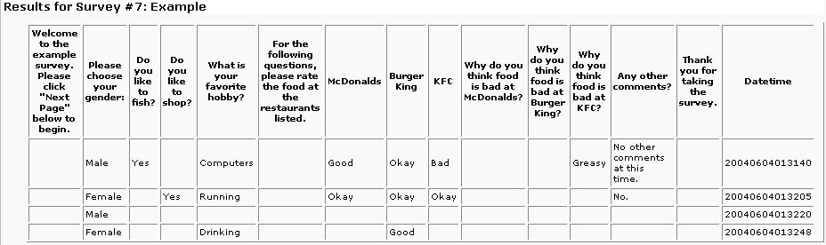NOTE: This table can be VERY large if there are many answers to your survey. This view is going to show you ALL of the results. If there are a lot of answers to your survey, this view is going to be too much data to really be useful. It's recommended you export the results to a CSV file and process it that way.
CSV Export
Clicking on this link will trigger a download of the results to the survey in a CSV (comma separated values) file. This file can then be opened using a spreadsheet or statistics analysis program for further processing. The CSV file will basically resemble the Table Results View but it can be opened with a separate program. You have the option of exporting the results as text or numeric. A text export will show the display values for the answers the user has chosen, such as Yes, No, Maybe, etc. A numeric export will just export the numeric value that was set for each answer value instead of the actual text. This may be useful if you want to export the results and use them in another analysis program.
Any filters applied to the results will also be applied to this export. If you have many results to a survey, this file can be VERY large and take a while to export. The script allows 2 minutes to complete the export, so wait at least that long for the export to complete before troubleshooting.
The date and time field for the CSV file may show up in scientific notation, such as 2.003E13, depending upon the program that you view this CSV file in. This can generally be fixed by formatting the column as a number with zero decimal points or even as text, but it will depend upon your program. Other columns may appear with leading zeros stripped, also, but this is again because of the formatting of your CSV viewer. UCCASS will export the results exactly as you see in the Table View.
Administration
Site Admin
The survey system offers a single password for access into an administration area. This password is separate from any other password used to take, edit, or view the results of a survey. This password is set by the administrator when the survey program is installed.
Once logged in to the administration area, you are recognized as an administrator by various areas of the site. The main administration page will allow you access to edit any survey. The process of editing a survey is detailed in Chapter Editing Surveys. Once logged in as an administrator, you will also be able to skip any password checking for taking surveys or viewing results by just leaving the password text box blank.
Site Settings
This section explains each of the configuration settings that are set when the program is first installed.
Site Path
This is the file system path to your UCCASS installation. The installation process will attempt to detect this path automatically for you but you can edit it if it is not correct. Pay attention to the Path Examples listed at the beginning of the survey.ini.php file for your specific operating system. Do not include a trailing slash (/) on the end of this path.
Site HTML Path
This is the web address to your UCCASS installation. The installation process will attempt to detect this path automatically for you but you can edit it if it is not correct. Do not include a trailing slash (/) on the end of this path.
Site Name
This value will be shown at the top of each page within the survey program with the default template. You can set this to the name of your web site or whatever you want to call your version of the survey system.
Default Template
This is the default template used for the main portions of the site and the administration area. If additional templates are created, then individual surveys can be assigned different templates. These alternate templates will only be used when taking or viewing the results of the survey, though. Templates are explained in Site Templates. This value can be set to any directory name within the templates/ directory.
Admin Password
This feature was removed in v1.8.0. This password allows access to the administration area of the survey system. Anyone supplying this password will be allowed to edit any survey as well as take private surveys and view results of private surveys without supplying the individual survey password as explained in Site Admin.
Page Break Text
This is the text that controls how the users will create page breaks within the survey. If you add a question where the text matches this value, a page break will be inserted. Adding page breaks is covered in Adding A Page Break.
Text Results Per Page
This value controls how many results will be shown on each page for questions that allow the user to type in an answer. If there are more answers than this value, then they will be shown on additional page as explained in Viewing Text Results.
Allowed Image Extensions
This should be a comma separated list of what image extensions you want to allow for bar graphs. This controls what images will be read from the file system and shown in a drop down as possible bar graph images for answer values. Creating answer types and values is discussed in Answer Types and Values.
Results Image Width
This should be the number of pixels for the widest bar graph (100%) on the results page. This will allow you to control how long the survey system stretches the images. If a specific answer value has 50% of the results, for example, its stretched image length will be half of this value.
Results Filter Limit
As explained in Filtering Results, the results of a survey can be filtered based upon certain answers to specific questions. When using this filter, however, it would be possible to filter the results according to specific criteria so that the results of an individual user would be shown. This could violate any anonymity the users have when they take a survey. This setting should be a number that controls a lower limit on the filter. If certain filter criteria limits the number of survey results to this number or less, the filtered results are not shown. For example, if you have one female in your organization and you choose to filter the results based upon those that answered female for the gender question, you'd be able to view the results she gave to every other question. This limit would prevent the results from being shown to protect the anonymous nature of a survey.
Track IP
This setting will either turn on or off the tracking of IP addresses of users taking surveys. If turned on, the IP addresses of each user who takes a survey is inserted into a database table. NOTE: There is no way to relate the IP address of a user back to the actual answers they gave! This is to maintain anonymity of the users as they take the surveys. Nothing else is done with the IP addresses other than storing them in a table. Any further analysis or actions based upon the IP addresses will have to be implemented on your own.
Results Text Filter
This should be a comma separated list of words that when given as a text answer by a user, they are not saved in the database. This allows you to get rid of answers that do not provide any information. For example, a question such as Any other comments? is common to have at the end of the survey. Answers such as no, nope, none, n/a, etc, do not provide any useful information so they can be filtered out and not saved if included in this list. If this list is empty, then all answers will be saved.
Survey and User Text Modes
These settings control the rendering of text supplied for the survey properties, questions, answer values, and user supplied text. The Survey Text Mode setting applies to any text used to create the survey, such as name, questions, and answer values. User Text Mode applied to any text supplied by users as they answer the surveys. If you do not have any text answers in your survey, then the User Text Mode will not affect anything. There are three options for each mode. The setting in the configuration file represents the maximum value that can be used on a per-survey basis. This means that if you set each one to Limited HTML, then when surveys are created, they will not be able to use the Full HTML mode.
- Text Only: Any text provided will be shown exactly as it's typed. Any HTML code that's included will be shown as plain text and not be rendered within the browser. This is the recommended setting for User Text Mode for security reasons.
- Limited HTML: This mode will allow the use of b, i, u, div, span, a, and img HTML tags with restrictions on what attributes can be used with each tag. The restriction on attributes is enforced so that onchange, onmouseover, etc JavaScript code cannot be injected into these limited HTML tags. This is the recommended setting for Survey Text Mode so that you can use additional formatting within your questions and answer values.
- Full HTML: Warning: Full HTML is a security risk unless used in a controlled environment. The Full HTML setting will render any and all HTML, JavaScript, DHTML, etc that's supplied in the text. In a controlled environment, this may be useful for including tables, code examples, etc within your surveys, but it can be abused. Injected JavaScript could be used to steal cookies, redirect users, and change any page content. This setting should never be used for the User Text Mode.
These settings can be changed back and forth after the survey has been created. If you use Limited HTML and create a question that includes images, for example, then switch to Text Only, the actual HTML code will be displayed within the question and not rendered in the browser. The user will see <b>bold text</b> instead of bold text.
With the Limited HTML and Full HTML options, you have two placeholders that you can use in your questions and/or answers. The first is {$html} will will resolve to the HTTP address of your current installation such as http://www.bigredspark.com/survey. {$images_html} will resolve to the images folder of the current template such as http://www.bigredspark.com/survey/templates/Default/images. So if you wanted to make a link to another survey within a question, you could use <a href="{$html}/survey.php?sid=55">Click Here</a>. If you wanted to include images in your questions or answer values, you can place them in the images/ folder of your template and refer to them as <img src="{$images_html}/aquabar.gif">. If you change templates, you do not have to change these placeholders so long as the images are also available in the new template. Users can also use these placeholder in their answers but it's up to you to inform them (or rather not inform them) of their ability to use them.
Date Format
This is the default date format used to create the date and times in the Results Table view and CSV exports. This value is also used to display the survey creation date/time on the survey properties page. This setting can be changed on a per-survey basis for the Table view and CSV exports. This setting must match the specifications given for the PHP date() function.
Database Settings
This section controls how the program connects to the database used to save all of the survey information and results. The db_type setting controls what type of database system is being used and is set to MySQL by default. With ADOdb, the survey system should be able to use multiple database types, but it has only been tested with MySQL at this point. The db_host setting should be a hostname or IP address of the database server and is set to localhost by default. The following settings control what username and password the program should use to connect to the database and what actual database it should use. The final configuration setting,
db_tbl_prefix allows you to set a prefix for each table the survey system uses. If the survey program is installed using the web based installation, this value will be used when all of the tables are created. If you are using the manual installation and you want to include a table prefix, you will need to create the prefixes on your tables manually. This setting allows the survey system to be installed into an existing database and be given a unique prefix so that it does not interfere with any already existing tables.
Character Set
This allows the use of alternate character sets including UTF-8 and BIG5, for example. These character sets allow the use of foreign language characters such as Chinese, Japanese and Arabic.
The available character sets are limited to those supported by MySQL and the PHP function htmlentities(). Only character sets common amongst the two can be used with UCCASS. The available options are shown below.
- ISO-8859-1 - Western European (default)
- UTF-8 - ASCII compatible multi-byte 8-bit Unicode
- cp1251 - Windows specific Cyrillic charset
- KOI8-R - Russian
- BIG5 - Traditional Chinese, mainly used in Taiwan
- gb2312 - Simplified Chinese, national standard character set
- Shift_JIS - Japanese
ISO-8859-1 (or Latin1 in MySQL) is the default and recommended for English sites. This character set is what most web sites use and include the common English letters, numbers, symbols, etc. If your site caters to an international crowd, UTF-8 is recommended as it will allow a greater number of characters to be used both when creating surveys and when users provide answers.
Smarty and ADOdb Paths
These settings are blank by default and will cause the survey system to use the versions of Smarty and ADOdb included with all of the other files. If you already have an installation of Smarty or ADOdb, though, you can give the complete path to the Smarty or ADOdb directories and the survey system will look there for the include files. The survey system is only tested with the versions of Smarty and ADOdb included with the package, though. Attempting to use another earlier or later version may cause the survey system to malfunction.
Site Templates
The survey system makes use of the Smarty template engine to separate all of the presentation files from the PHP code files. The main site and admin area can be assigned a certain template and individual surveys can be assigned different templates as they are created. The template choices are controlled by the names of the directories in the templates/ directory. The default template is named "Default" and the templates/Default directory contains all of the files that controls what that template looks like and all of the images that are used with that template. Any additional directories that are created within the templates/ directory will be assumed to contain template files.
Additional templates can be created to give your survey system site its own look or to integrate it into your own design. Simply copy an existing template to a new directory and modify to your liking. Each template should include an images/ directory, also. If an images/ directory is not found, though, the survey system will look in the template directory for any images (to be used in bar graphs, for example).
Technical Support
All previous support forums for this system are no longer available online. Instead, use GitHub to report Issues.
Tutorial
- 1. The following tutorial will illustrate how to create the example survey included with the installation package. The first step is to click the "Create New Survey" link from the main page. From there, you'll be presented with the initial form to create your survey. 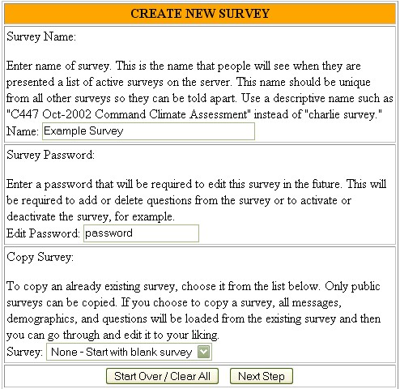
- 2. Provide a Name for your survey in the first block. This name is what the users will see among the list of surveys and along the top of the page as they take the survey. Use something descriptive so you and your users can easily tell what the survey is for and it's not confused with any other survey.
- 3. You must provide a password for editing the survey at this point. You can log into the Administrator area to edit any survey, but this specific password will be for this survey, only. While I use password as an example here, you'll want to use something a little harder to guess.
- 4. You also have the option here to copy an existing survey. This will copy all messages, questions, and dependencies from the old survey to the new one. This is useful if you run similar surveys and just want to change a few questions. Now you will not have to recreate the entire survey over again to do so.
- 5. After clicking Next Step, you'll be taken to the Survey Properties page. You essentially have created an empty survey that you are now editing in order to add messages and questions.
- 6. The next page you are brought to allows you to change any of the survey properties. The first property is the name, which you've already given. Next, you can activate or inactivate your survey and you can optionally choose to include a start and end date for this survey or just automatically make it active. If no dates are given, the survey will be controlled by the Active/Inactive status. If dates are given, the survey will only be available if it's also marked as Active and the date is between the dates you specify. Making a survey inactive or passing the end date does not affect the answers to the survey that have already been given.
- 7. You can choose a template to use for this survey. This template will take effect when users begin to take your survey or when they are viewing the results. The next option allows you to set the text mode for the survey. The administrator may have limited what text modes you are allowed to choose from. You can also set the action to be taken when the user finishes your survey. The can be returned to the main page, the results page or sent to a custom URL that you provide. For the example survey, I've set both text modes to Text Only and the completion page to redirect back to the Main Page.
- 8. You also control the survey access from this page. You have the option to make the survey public, meaning everyone will see it in the list of surveys and anyone can take it, or you can choose to have it protected by a password. The same options are available regarding the results of the survey. It's possible to have a public survey, yet private results. For the example survey, I've chosen to have public access to both the survey and the results. Mark this survey as active and allow public access to both the survey and the results.
- 9. Press Save Changes at the bottom of the page to save our changes. Then click on Edit Questions to begin adding questions to the survey. You'll notice there are currently no questions in your survey and you have the option to add the first question using the form at the bottom of the page. 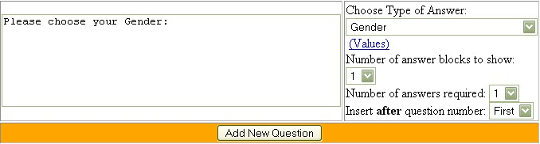
- 10. For the first question, I'm going to ask the user to "Please choose your Gender:". Once you have the text of the question, you need to choose an answer type. (Click here for an example of how to create answer types.) We want an answer type of Gender for this question that'll have the options of Male or Female.
- 11. Choose to display just one answer block, which will display one set of radio buttons with options for Male and Female. The option is there to display more answer blocks (with the same choices of Male or Female) if your questions require it.
- 12. The number of answers required is directly related to the number of answer blocks shown. Since we're showing one answer block and we want to require that the users answer this question when taking the survey, choose to also require one answer. This will force the user to choose either Male or Female when taking the survey.
- 13. The last option you have is where to place the new question you're adding. Since there are no questions currently in the survey, the only option is to add this question first. This will normally default to the last question in the survey so that new questions are added onto the end of the survey.
- 14. NOTICE: As of version 0.95.4, there is a final option for each question that's the Answer Display Orientation, with options of Vertical, Horizontal, Drop down, and Matrix. These only apply to the multiple choice questions. Vertical and Horizontal apply to the direction that the checkboxes or radio buttons will be displayed along with the answers. Drop down means the answers will be presented in a drop down <select> box with the first answer being blank. If a sequence of questions are all assigned the same answer type and given a Matrix orientation, then the questions and answers will be presented in a grid similar to the following image. To match the example survey included with the package, questions 4 - 6 should be assigned a Matrix orientation. 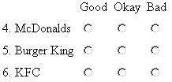
- 15. Click Add New Question to add this gender question to the survey. 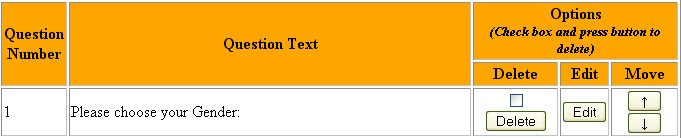
- 16. You'll now see that you have question number 1 in your survey. The listing of questions shows you the text of the question and gives you the option to delete the question (check the box first), edit the question (edit the text or change the answer type, etc), or move the question up or down.
- 17. Next we're going to add a question two questions, one only shown to users who answered Male for question one, and another for users who answered Female. 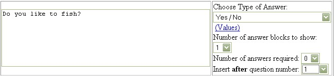
- 18. We're going to ask the guys "Do you like to fish?" with an answer type of "Yes / No", one answer block, zero answers required, and insert the new question after question number one. To make this question only show up to users who answered Male for question one, we'll need to include a dependency with this question before adding it. 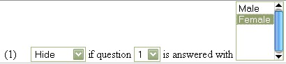
- 19. The dependency we'll add is to "Hide" the new question if question "1" is answers with "Female".
- 20. Click on Add New Question and you'll be presented with the updated list of questions in your survey. 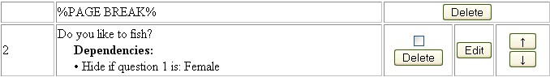
- 21. Notice that the program automatically added a page break before question number 2. This is required because it needs the user to answer question one before it can determine whether or not to hide question 2. If you try to delete this page break or move the question up to the first page, you'll get an error. Notice how the dependencies for the new question are also listed.
- 22. For question number 3, we're only going to show it to users who answered Female for question one. 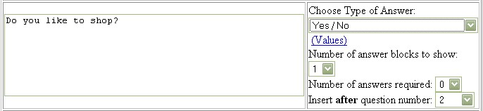 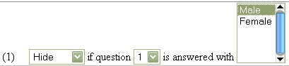
- 23. This is another Yes / No question with one answer block, no answer required, and inserted after question 2. We'll create a dependency similar to question 2, hiding the new question if question one is answered with Male. 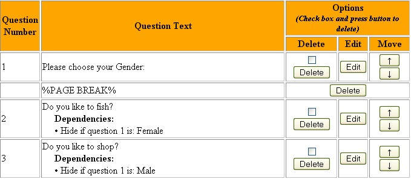
- 24. You should now see three questions in your survey and one page break. Notice that another page break was not added when we added question 3. Question 3 is dependent upon the answer to question one and since question one is already on another previous page, there's no need to add another page break.
- 25. For question 4, we'll be asking the user "What is your favorite hobby?" with an answer type of Sentence, one answer block, zero answers required, and inserted after question 3. 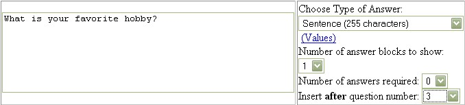
- 26. A Sentence answer type will show a normal text box to the user to enter their answer in and allow 255 characters. If the answer requires more room, you can choose a Text box (Large) which does not have a limit on the length of the answer
- 27. Question 5 is not actually going to be a question, it'll be more of a label: "For the following questions, please rate the food at the restaurants listed.". You'll add the question in the normal way with an answer type of None. The number of answer blocks and answers required is irrelevant since there won't actually be any answers shown. Although we're not going to create any at this time, you can place dependencies upon this "question". 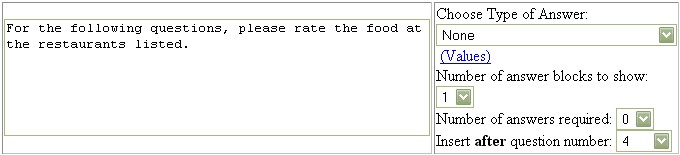
- 28. After adding this question to your survey, you should see a question list like this: 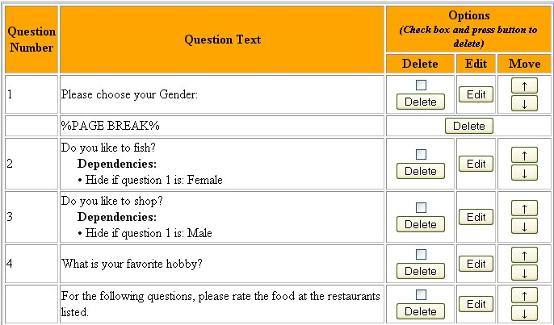
- 29. Notice that for the question just entered, it is not assigned a question number. Questions with an answer type of None are basically treated as labels and do not take up a question number. Then can be moved around the survey and have dependencies, though
- 30. The first restaurant we'll list will be Question 5, "McDonalds". Choose an answer type of Good / Okay / Bad with one answer block and zero answers required. 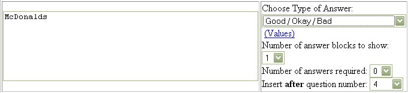
- 31. Notice that you can only insert the question after question 4, which means it's actually going to appear before the "label" we just added. This isn't a problem, though, as we'll just use the down arrow button 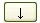 to move question 5 after it's added. After doing so, you should end up with a question list ending in this: 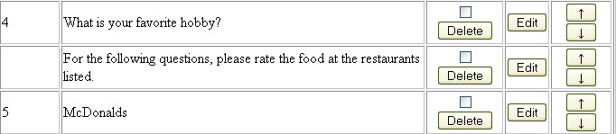
- 32. Now add two more restaurant questions, "Burger King" and "KFC" with Good / Okay / Bad answer type, one answer block, and zero answers required. Add these as question 6 and question 7
- 33. You should finally end up with a 7 question list like this: 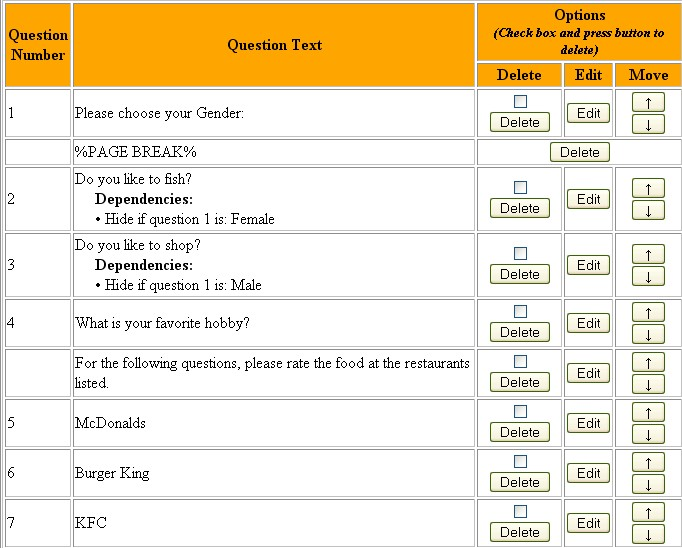
- 34. At this point we only have two pages in the survey. It would be nice to separate the gender questions from the restaurant questions, so we're going to add a page break after question 4. To make a page break, you need to enter the exact text listed above the question text box. If this text is a link, you can click on it to fill the text box for you. The answer type, answer blocks, and required will be ignored. Be sure to insert the page break after question 4. 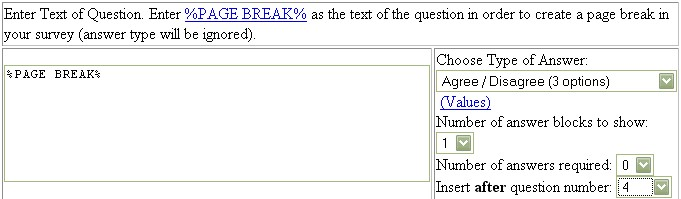
- 35. You should now see a page break after question 4 in the list
- 36. Next we'll add a group of similar questions. If the user says that the food is "Bad" at one of the restaurants, we'd like to require them to give a reason why. Question 8 will be "Why do you think the food is bad at McDonalds?" with a Sentence answer type, one answer block and ZERO answers required. 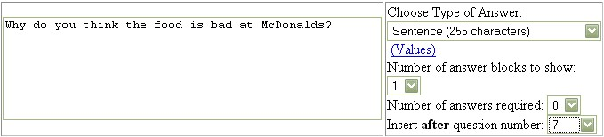
- 37. Now, I know I just said we're going to make this question required, but it's only required based upon the answer to a previous question, so we'll handle that in a dependency. We're going to add two dependencies to this question. One is to hide the new question if question 5 (about McDonalds) is answered Good or Okay. The second dependency is to require the new question if question 5 is answered Bad. 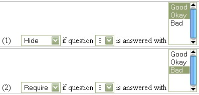
- 38. Save this question and ensure you see both dependencies listed under the question in the list. Notice how the system again automatically added a page break since we need to get the answers to the first questions before we can determine whether to hide or require this question. Add two more questions asking why the users did not like the food at the final two restaurants. You should end up with 10 questions, now.
- 39. For the final question, we're going to ask if there are "Any more comments?" and provide the user a larger text area to write their answer in. The answer type will be Text box (Large) with one answer block, no answers required, and inserted after question 10. There will be no dependencies for this final question
- 40. You should now have 11 questions (with one label) in your survey on 5 different pages. Click on the Return to Main link at the top of the page and you should see the survey you just created listed in the Public Surveys. Click on the link to begin taking the survey.
- 41. Page one is going to be your welcome message. Click on Next Page >>. 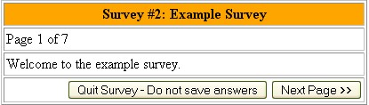
- 42. Page 2 is going to ask the user's gender. Notice how the question is marked with since it's required. If you do not choose an answer, you'll be brought back to this page. Answer Male and click on Next Page >>. 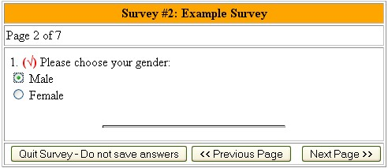
- 43. Page 3 is going to ask out fishing and hobby question. Notice how the question about shopping was not displayed because of the dependencies. Answer Yes and enter a favorite hobby of your own for these questions and then click on Next Page >> 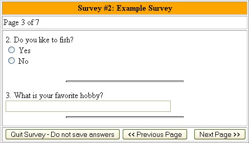
- 44. Page 4 is going to ask us to rate the food at the three restaurants either Good, Okay, or Bad. Notice that if you pick Bad for anything and click on Next Page >>, you'll get a required question asking you why the question was bad. 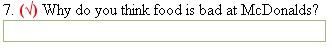
- 45. If you do not answer Bad to any of the questions, then you'll be taken right to the final question when you click Next Page >>. After you've answered all of the questions, the answers are saved in the database and you see the thank you message
- 46. Go back to the main page and click on the link after your survey to view the results. You should see results graphs similar to this: 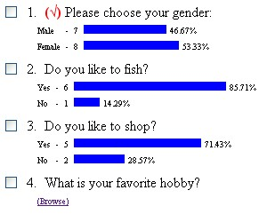
- 47. These results show 7 people answered Male and 8 people answered Female. Notice how the number of answers to the shopping question is 7 total, yet 8 users answered Female for question one. This means someone decided not to answer question 3. Since we didn't make it required, this is certainly possible. Question 4 is a text answer question, so there is a browse link to view those answers on a separate page. That page offers a text box to also search through all of the text answers
- 48. At the top of the page you'll see a drop down with four options. Also notice the check boxes next to each question: 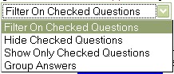
- 49. To only see the answers to question one and two, for example, check the boxes next to the two questions and choose Show Only Checked Questions in the drop down. Press Go to only see those two questions. You can choose Show All Questions from the drop down now to go back to viewing all of the results
- 50. Once you get more answers to your survey, you'll be able to do some filtering. Say, for example, we want to see how males who like to fish answered the rest of the survey. Check the boxes next to questions one and two, choose Filter On Checked Questions, and click Go.
- 51. You'll now be shown a page where you can choose what answers to filter on. 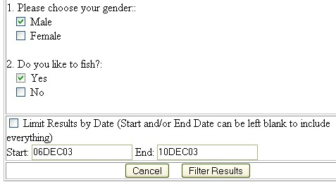
- 52. Check Male for question one and Yes for question two. Notice how you can also filter the results based upon a start and end date. Only surveys taken between the two dates will be shown in the results. These dates default to the minimum and maximum dates for the survey. Click Filter Results to go back to the survey to see how Males who like to fish answered the rest of the questions. 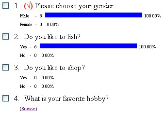
- 53. Note: When you click on browse to view text answers, those text answers are also filtered according to what you chose.
- 54. You can click Clear Filter from the drop down to go back to viewing all of the results.